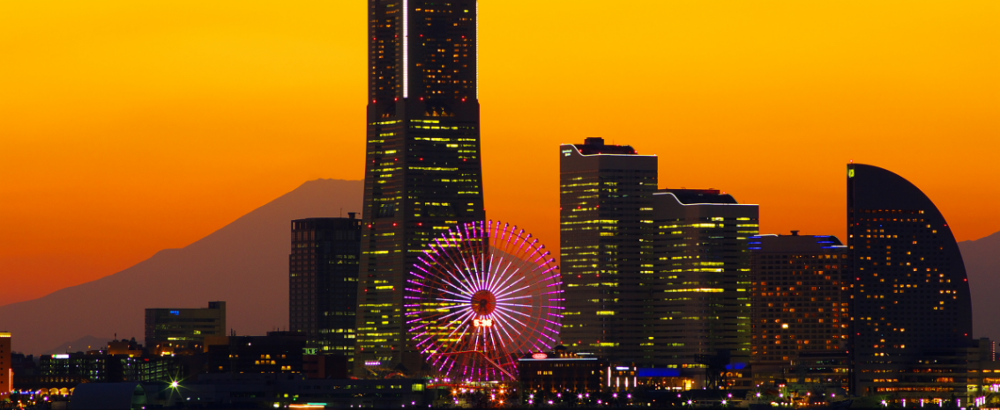

”横濱”に構える、歴史あふれる建物。
大航海時代以降、世界中に進出して行ったヨーロッパ人にとって、
アジアの日差しは非常に強く感じられるものでした。
そんな異国で心地よく過ごすために考え出された建築様式
それが”コロニアルスタイル”。

真っ白な建物にベランダを廻らし、
風通しが良くなるように工夫された住居は、
アジアとヨーロッパ人のスタイルが融合したものといえるでしょう。
都会に現れる、白い壁に大きなテラスをもった建物、
そして屋根には 日本瓦…
明治41(1908)年に建てられた歴史ある建物です。
※コロニアルスタイル
17~18世紀にイギリス・スペイン・オランダなどの植民地に発達した建築・工芸の様式。
本国の様式を模倣し、植民地向けの実用性を加味したもの。